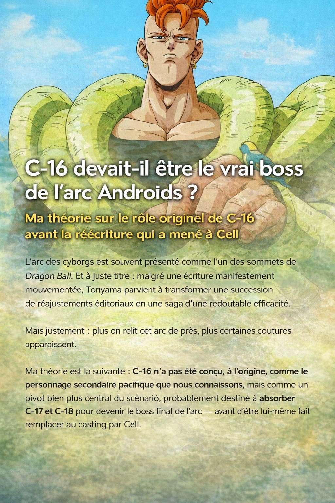
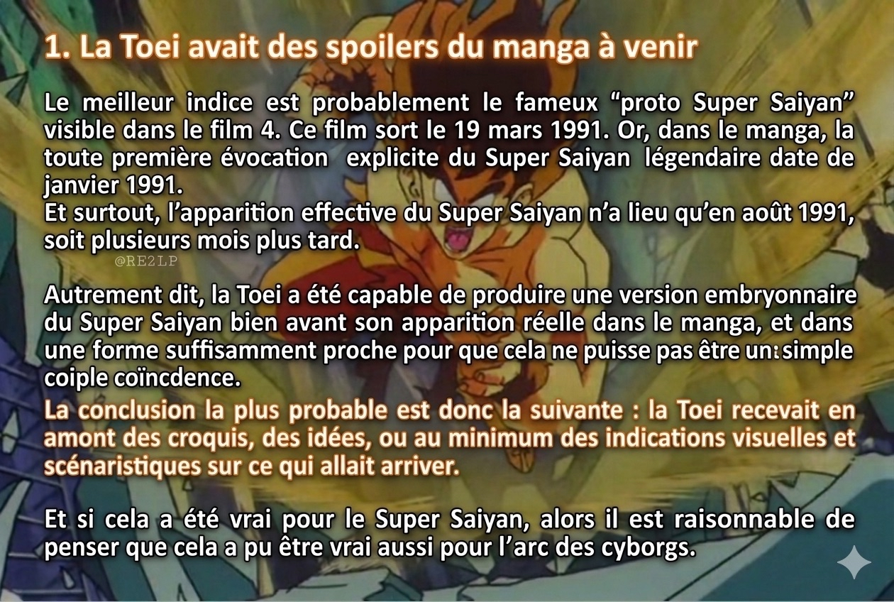
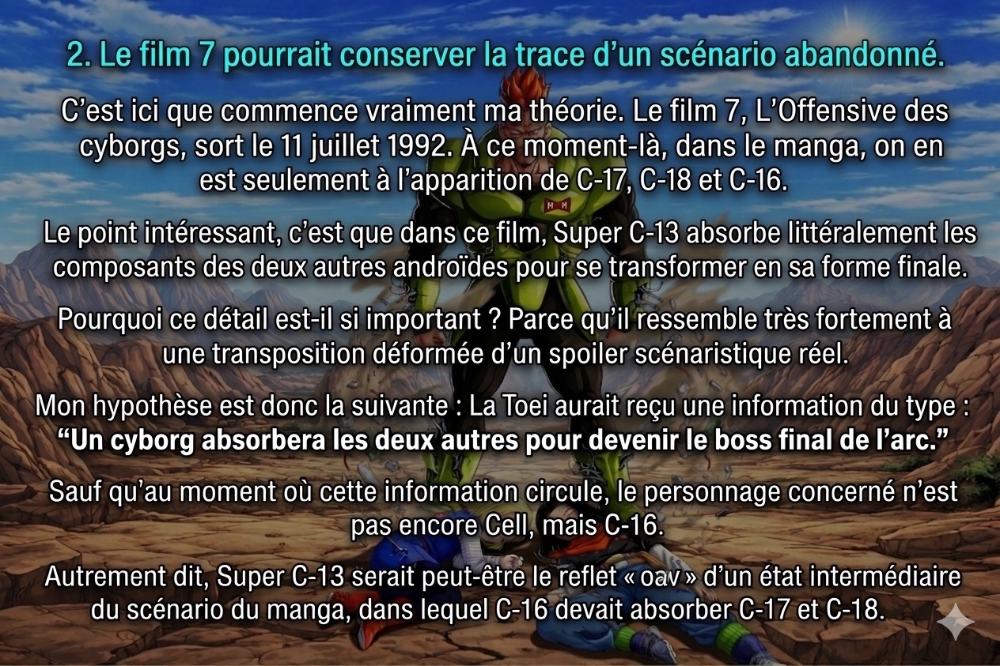

C-16 devait-il être le vrai boss de l'arc Androids ? Voici une théorie sur le rôle originel de C-16 avant la réécriture qui a mené à Cell.
L'arc des cyborgs est souvent présenté comme l'un des sommets de Dragon Ball. Et à juste titre : malgré une écriture manifestement mouvementée, Toriyama parvient à transformer une succession de réajustements éditoriaux en une saga d'une redoutable efficacité.
Mais justement : plus on relit cet arc de près, plus certaines coutures apparaissent.
Ma théorie est la suivante : C-16 n'a pas été conçu, à l'origine, comme le personnage secondaire pacifique que nous connaissons, mais comme un pivot bien plus central du scénario, probablement destiné à absorber C-17 et C-18 pour devenir le boss final de l'arc — avant d'être lui-même remplacé en catastrophe par Cell au cours de la réécriture.
Et pour comprendre pourquoi cette hypothèse mérite d'être prise au sérieux, il faut d'abord revenir sur un point essentiel : la Toei disposait visiblement d'informations en avance sur le manga.

1. La Toei avait des spoilers du manga à venir
Le meilleur indice est probablement le fameux « proto Super Saiyan » visible dans le film 4.

Ce film sort le 19 mars 1991. Or, dans le manga, la toute première évocation explicite du Super Saiyan légendaire date de janvier 1991. Et surtout, l'apparition effective du Super Saiyan n'a lieu qu'en août 1991, soit plusieurs mois plus tard.
Autrement dit, la Toei a été capable de produire une version embryonnaire du Super Saiyan bien avant son apparition réelle dans le manga, et dans une forme suffisamment proche pour que cela ne puisse pas être une simple coïncidence.
La conclusion la plus probable est donc la suivante : la Toei recevait en amont des croquis, des idées, ou au minimum des indications visuelles et scénaristiques sur ce qui allait arriver.
Et si cela a été vrai pour le Super Saiyan, alors il est raisonnable de penser que cela a pu être vrai aussi pour l'arc des cyborgs.
2. Le film 7 pourrait conserver la trace d'un scénario abandonné

C'est ici que commence vraiment ma théorie.
Le film 7, L'Offensive des cyborgs, sort le 11 juillet 1992. À ce moment-là, dans le manga, on en est seulement à l'apparition de C-17, C-18 et C-16.
Le point intéressant, c'est que dans ce film, Super C-13 absorbe littéralement les composants des deux autres androïdes pour se transformer en sa forme finale.
Pourquoi ce détail est-il si important ? Parce qu'il ressemble très fortement à une transposition déformée d'un spoiler scénaristique réel.
Mon hypothèse est donc la suivante :
« Un cyborg absorbera les deux autres pour devenir le boss final de l'arc. »
Sauf qu'au moment où cette information circule, le personnage concerné n'est pas encore Cell, mais C-16.
Autrement dit, Super C-13 serait peut-être le reflet « OAV » d'un état intermédiaire du scénario du manga, dans lequel C-16 devait absorber C-17 et C-18.
3. Le contexte éditorial rend cette hypothèse crédible
Cette théorie ne sort pas de nulle part. Elle prend sens lorsqu'on replace l'arc dans son contexte de production.
On sait que les antagonistes ont changé plusieurs fois, parce que les premiers choix de Toriyama ne satisfaisaient pas son entourage éditorial. L'arc avance donc par corrections successives, dans l'urgence.
Toriyama recolle les morceaux à mesure qu'on lui demande de modifier ses plans, et il le fait avec un talent remarquable. Le résultat final est si fluide que beaucoup de lecteurs ne voient même pas les réécritures. Pourtant, certaines traces demeurent.
L'une des plus connues est cette réplique de Trunks, qui parle de C-19 et C-20 comme des cyborgs meurtriers ayant assassiné leur créateur.
Cette réplique entre en contradiction avec ce que l'arc montrera ensuite. Elle trahit un état antérieur du scénario, où C-19 et C-20 occupaient initialement la place des ennemis principaux.
Puis, ces deux-là sont écartés. Toriyama crée alors C-17 et C-18, qui constituent déjà une amélioration évidente. Mais selon moi, cela ne s'arrête pas là.
4. C-16 aurait été conçu comme le nouveau « vrai » danger
C'est ici que tout s'assemble.
Après l'abandon de C-19 et C-20 comme antagonistes centraux, Toriyama aurait conçu un troisième cyborg, plus inquiétant, destiné à reprendre la place de boss final : C-16.
Et c'est probablement à ce moment-là qu'un embryon de scénario ou de design est envoyé à la Toei, qui le recycle à sa manière dans le film 7 sous la forme de Super C-13.
Mais ensuite, nouveau problème : C-16 lui-même n'aurait pas satisfait pleinement les exigences éditoriales. Il aurait alors fallu aller encore plus loin et créer un véritable « monstre », plus immédiatement marquant, plus « à la Freezer » : Cell.
Ce basculement semble s'être joué très vite, en l'espace de quelques semaines.
5. Pourquoi je pense que le C-16 initial a été évacué du scénario
Le premier indice est simple : Trunks ne parle jamais d'un troisième cyborg majeur dans sa version du futur.
Et non, je ne pense pas qu'il faille invoquer une quelconque « distorsion temporelle » compliquée pour expliquer ça. La réponse la plus simple est souvent la meilleure : au moment où Trunks est introduit, C-16 n'occupe pas encore cette place dans le scénario.
Il a d'abord été pensé comme un remplaçant possible de C-17 et C-18, puis il a lui-même été remplacé par Cell.
Même logique, selon moi, pour la différence de puissance entre les cyborgs du présent et ceux du futur : ce n'est pas forcément une histoire de timeline magique. C'est surtout le signe que Toriyama a réévalué la menace à la hausse, parce qu'avec trois Super Saiyans potentiels et Piccolo fusionné, les cyborgs « version initiale » n'auraient plus suffi.

Ce détail est révélateur : C-16 évalue les guerriers Z avec la précision d'un système conçu pour les combattre — mais il avoue ne pas avoir de données sur eux. Comme si ses paramètres avaient été définis avant que l'arc ne soit entièrement stabilisé.
6. Les déclarations du Dr Gero n'ont de sens que si C-16 était censé être catastrophique
Lorsqu'il s'apprête à réveiller C-17 et C-18, Dr Gero explique très clairement qu'il aurait préféré éviter de les activer, mais qu'il n'a plus le choix. Puis il insiste : leur défaut a peut-être été corrigé. Jusque-là, tout va bien.
Mais ensuite, quand il est question de C-16, le discours change radicalement. Gero devient presque paniqué. Il supplie qu'on ne l'active pas. Il affirme que cela causerait leur perte. Il le présente comme un prototype raté, à ne réveiller sous aucun prétexte.
Le problème, c'est que le C-16 que nous découvrons ensuite ne correspond pas du tout à cette mise en garde.
Il n'est ni incontrôlable, ni sadique, ni destructeur par nature. Il est au contraire placide, taciturne, détaché, presque doux. Ce décalage est énorme.
La solution la plus logique, selon moi, est que le C-16 dont parle Gero n'est pas exactement celui que l'arc finira par utiliser. Ou plus précisément : le rôle prévu pour C-16 a changé entre ces dialogues et la suite de l'histoire.
Autrement dit, ces scènes conservent la trace d'une version antérieure du personnage, dans laquelle C-16 représentait un danger absolu.
7. Tout indique qu'il devait avoir une autre fonction narrative
Une fois activé, C-16 donne une impression étrange : celle d'un personnage important, mais dont Toriyama ne sait plus tout à fait quoi faire.
C-17 s'interroge lui-même sur sa nature. Il trouve curieux que Gero ait utilisé une base humaine pour eux, alors qu'il était capable de construire un cyborg entièrement mécanique.
Puis C-16 apparaît, sort de sa capsule, parle peu, reste à distance, refuse de tuer Son Goku immédiatement, et devient progressivement une sorte d'allié passif du groupe.
8. Même son savoir sur l'absorption de Cell sonne comme un vestige de scénario
Un autre détail me frappe.
C-16 comprend très vite la nature de la menace Cell. Il parle de l'absorption de C-17 et C-18 avec une pertinence qui peut donner l'impression qu'il est connecté, conceptuellement, à cette idée.


C-16 ne subit pas cette menace passivement. Il l'anticipe, il la nomme, il tente de l'empêcher — avec une précision qui contraste avec son détachement habituel. Comme si la mécanique d'absorption était quelque chose qu'il comprenait de l'intérieur.

Et puis il y a ce moment, juste avant l'absorption, où C-16 dit simplement qu'il était content de voyager avec eux. Que ce sont de bonnes personnes. C'est une réplique qui ne ressemble à rien d'autre dans l'arc — trop douce, trop humaine pour un cyborg censé être le prototype d'une arme absolue.
Dans la logique de ma théorie, cela ressemble à un reste de fonction narrative transférée : ce qui devait peut-être être son propre destin scénaristique devient finalement celui de Cell.
Cell récupérerait alors non seulement la place de boss final, mais aussi la mécanique dramatique initialement envisagée pour C-16.
9. La mort de C-16 ressemble à un adieu de l'auteur à un personnage abandonné
Et c'est probablement là que la chose devient la plus visible.
La scène finale de C-16 est très forte, mais aussi profondément étrange.
Il parle à Gohan de paix, de nature, de colère retenue, de violence nécessaire face à certains adversaires. Puis sa mort sert de déclencheur à la transformation en Super Saiyan 2.

Le problème, c'est qu'il n'existe pratiquement aucune relation affective construite entre Gohan et C-16.
Pourquoi est-ce sa mort, et non le massacre des autres, qui fait basculer Gohan ?
Sur le plan émotionnel pur, la scène fonctionne. Sur le plan strictement narratif, elle est plus discutable.

Et c'est justement pour cela qu'elle me semble révélatrice : Toriyama cherche à donner à C-16 un poids terminal, une sortie noble, une fonction décisive, comme pour compenser le fait qu'il s'agit d'un personnage dont le destin initial a été abandonné en cours de route.
Autrement dit, la mort de C-16 ressemble à un hommage tardif rendu par l'auteur à une ancienne version du scénario.
Conclusion : C-16 est peut-être le fantôme d'un ancien arc
Je pense qu'il existe un faisceau d'indices extrêmement troublant :
la Toei semblait avoir accès à des éléments anticipés du manga ; le film 7 met en scène une logique d'absorption entre cyborgs ; l'arc Androids porte les marques évidentes de plusieurs réécritures ; Dr Gero parle d'un C-16 qui ne ressemble pas à celui que nous connaissons ; C-16 donne souvent l'impression d'un personnage central devenu secondaire en cours de route ; sa mort semble lui attribuer in extremis une grandeur qu'il n'avait plus dans le scénario principal.
Ma lecture est donc la suivante :
C-16 devait probablement être, à un stade du développement, l'aboutissement de l'arc cyborg. Il aurait été pensé comme un danger supérieur, peut-être destiné à absorber C-17 et C-18. Puis Toriyama, poussé par les contraintes éditoriales, aurait remplacé cette idée par Cell — tout en conservant dans le manga plusieurs vestiges de cette version antérieure.
Et c'est peut-être ce qui rend cet arc si fascinant : même réécrit en permanence, même bricolé dans l'urgence, il continue de laisser entrevoir, entre les cases, les fantômes de ses versions abandonnées.